Where's Waldo: Scene 10 - Safari Park
1987 First Edition
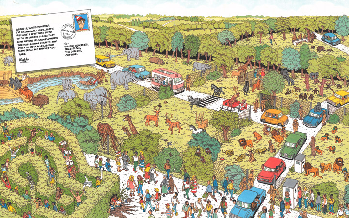
Originally, only Waldo and his lost bag were hidden on the beach.
1993 Mini Edition
Gameplay Aditions
- Wenda and Woof were added
Cosmetic Changes
By the early 90s, more detail was added to the bottom edge of the scene. Most likely so the scene could be used in merchandising
with different aspect ratios. Some of the added detail is visible in this edition, though most is cut off by the page boundary.
2012 Deluxe Edition
Political Correctness
This scruffy character was cleaned up. He got a chin lift, and his arms were shortened:
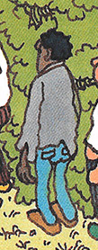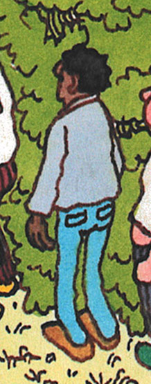
This smoker had his pipe removed:
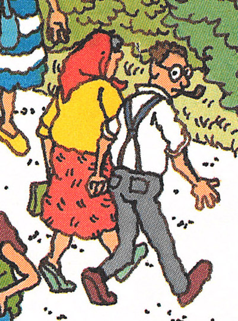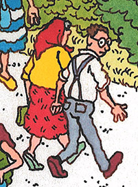
This pudgy character was slimmed, and his hooked nose was redrawn:
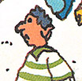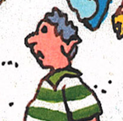
This woman got a chin lift:
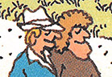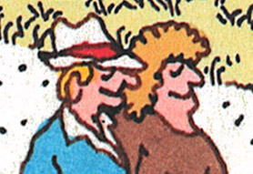
This person's face was redrawn:
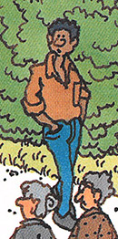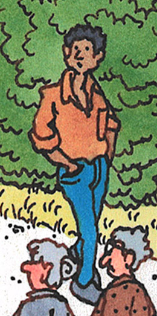
Diversity
This man was changed to a woman:
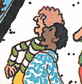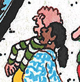
Several characters were changed to different races:
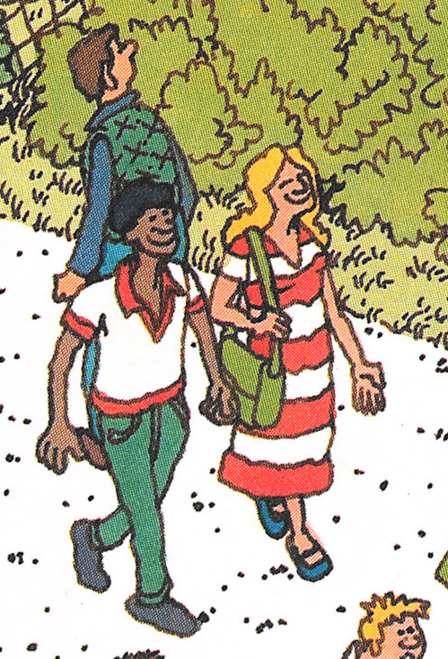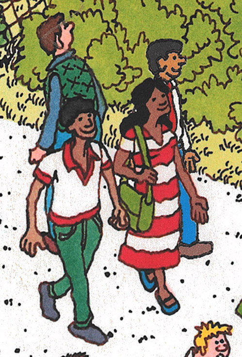
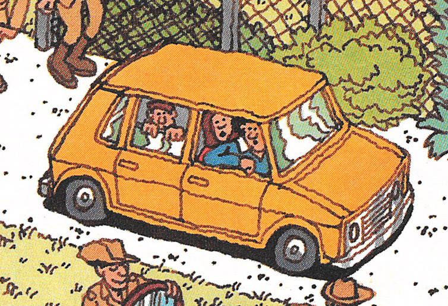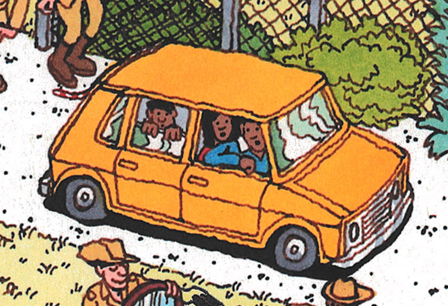
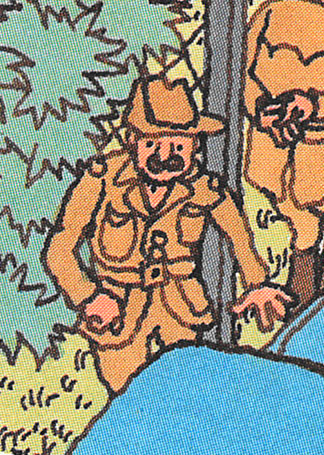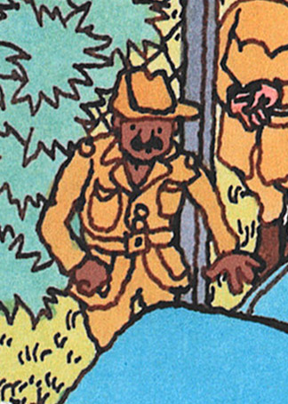
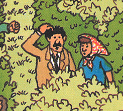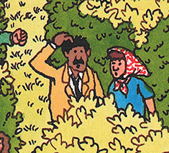
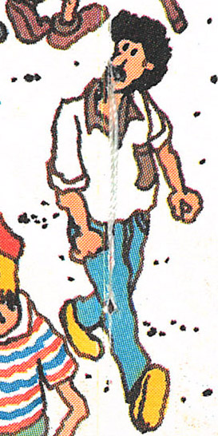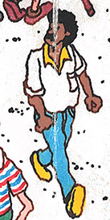
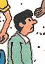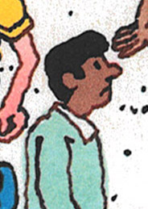
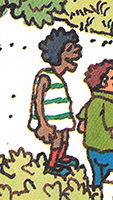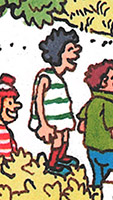
Cosmetic Changes
The kid in the red hat was repositioned slightly to the left.
Postcard
Under the Postcard
By the early 90s additional artwork had been added underneath the postcard, so the scene could be used
outside the context of the book (posters, puzzles, etc.):
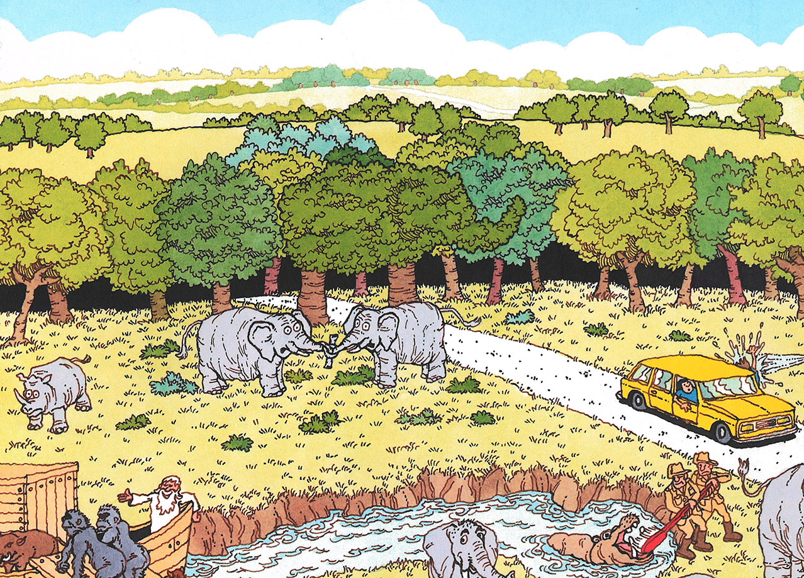
Starting in the 1993 edition, a small tuft of green grass that was added for the under-the-postcard scene can be
seen,
above the yellow car:
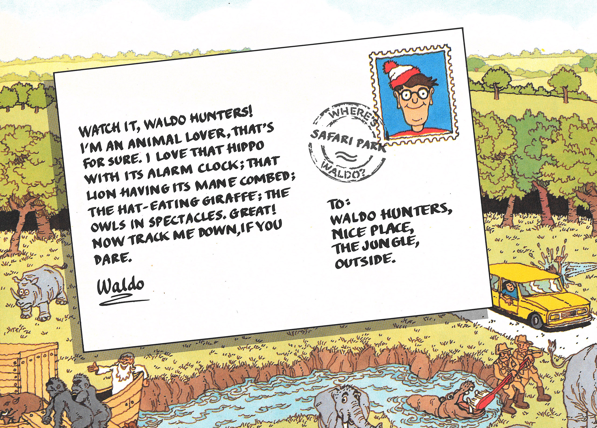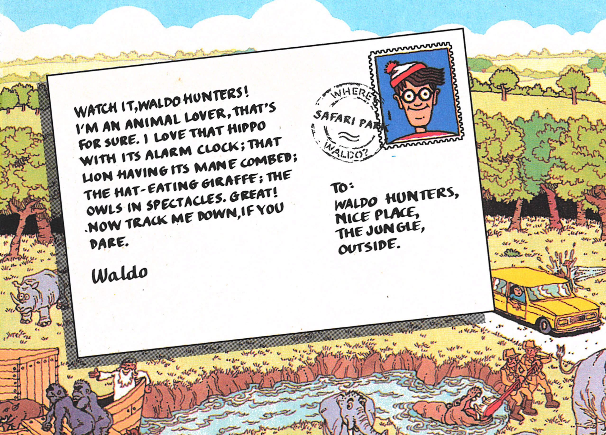
Postcard Text
1987
Watch it, Waldo hunters! I'm an animal lover, that's for sure. I love that hippo with its alarm clock; that
lion having its mane combed; the hat-eating giraffe; the owls in spectacles. Great! Now track me down, if you
dare.
1997
Watch it, Waldo hunters! I'm an animal lover, that's for sure. I love that hippo with its alarm clock; that
lion having its mane combed; the hat-eating giraffe; the owls in spectacles. Great!
2012
Watch out, Waldo-hunters! I love all animals—that's for sure. I love that hippo with its alarm clock, that lion
having its mane combed, that hat-eating giraffe, those owls in sunglasses. Great!